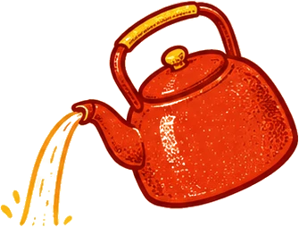
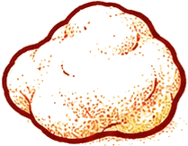
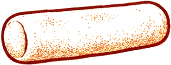
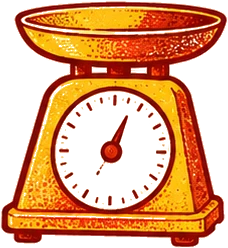
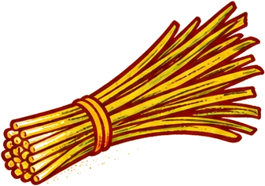
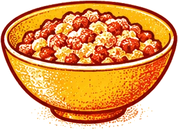

Gyozanomise Okei · Tokyo
Gyoza.
Eight grams at a time.
dish on the menu
years, same recipe
dumplings a day
Sound on? This lesson has a narrator. Scroll down when the steam clears.
OK!
Step 1 · The dough
Little by little
Hot water, a little at a time. Pour it all at once and the dough gets grumpy. Then — and this is the hard part — you let it rest. Five minutes. Then thirty more. Patience, ja?
Strong flour, a little cake flour for smoothness, hot water and a drop of sesame oil.


★
Step 2 · The wrappers
The earlobe test
Soft like an earlobe. Yes, really. And every piece weighs eight grams. Not seven. Eight. Lekker precise.


↔ Swipe to roll out a wrapper
HAK!
Step 3 · The filling
Napa cabbage only
Most shops use normal cabbage. Here? Only napa cabbage. Chopped, not sliced. Hak hak hak!
Blanched, chilled, then chopped with a Chinese cleaver — the hard stems first.
Chop on the beat for style points
& OK
Step 3 · The filling
Chives, slowly
Chives. A little bit bitter, and they keep the pork honest.

Step 3 · The filling
Work it in your palm
Fatty pork belly, salt, two kinds of pepper, ginger, and a very generous splash of sesame oil. Work it in your palm until nothing feels grainy.

LATER
Step 3 · The filling
A whole day's rest
Then the meat rests a whole day. Patience is the secret ingredient. Sorry, it's true.
FOLDED
Step 4 · The fold
Two years of practice
It took the chef two years to learn this. Your left hand learns how much is enough. Don't be greedy, hè?
Step 5 · The pan
Don't watch. Listen.
About six and a half minutes. But don't watch the clock. Listen. When the sizzle changes its voice, it's done.
Oil, gyoza in a ring, a splash of hot water with a little flour, lid on. The lid is foggy — use your ears.
KIMASU
Step 6 · Eat
Plain first
First bite: nothing on it. Just taste. After that, do what you like. I won't tell anyone. Eet smakelijk!
Take it home
The recipe card
Quantities are our estimate The shop gives no measurements — the chef works by hand and feel. The 8 g wrappers, the rests and the ~6½ minute fry are from the video; the rest is a home-kitchen starting point for ~36 gyoza.
Dough
| Strong (bread) flour | 170 g |
| Cake flour | 30 g |
| Hot water | ~110 ml, added little by little |
| Sesame oil | 1 tsp, kneaded in |
Filling
| Fatty ground pork belly | 250 g |
| Napa cabbage | 250 g raw (blanched, chilled, chopped, squeezed) |
| Garlic chives (nira) | 40 g |
| Salt | 1 tsp |
| Black + white pepper | ¼ tsp each |
| Ginger | 1 tsp, finely chopped |
| Sesame oil | 1½ tbsp — "generous" |
Method
- Mix the flours. Add hot water little by little; knead. Rest 5 min, knead again, shape, rest 30 min (covered).
- Roll into logs, cut 8 g pieces, roll each into a thin round wrapper. The dough should feel as soft as an earlobe.
- Season the pork with salt, both peppers, ginger and plenty of sesame oil; work it in your palm until no longer grainy. Rest it in the fridge for a day.
- Blanch, chill and chop the napa cabbage with a cleaver; chop the chives slowly. Fold the vegetables into the meat.
- Fill (don't overfill) and pleat.
- Hot oiled pan, gyoza in a ring. Add hot water with a spoon of flour stirred in, lid on, about 6½ minutes — until the sizzle changes. Lid off, let the lacy wings crisp, flip onto a plate.
- First bite plain. Then soy, vinegar or chili oil as you like.
Based on Eater's The Experts episode with chef Hitoshi Umamichi of Gyozanomise Okei, Tokyo — watch the original. Illustrations and narration made for this page; the chef's words are paraphrased. Unofficial — go eat at Okei.